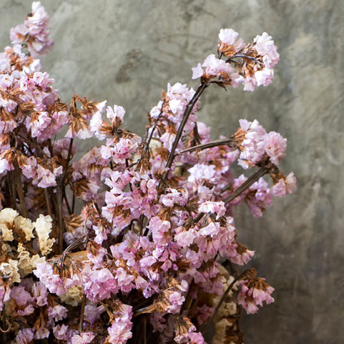

꽃 말리는 방법
- 자연 건조법
- 생화를 그대로 그물망이나 줄에 묶어 거꾸로 매달은 상태에서 말리는 것이다.
드라이 플라워는 건조 시간이 짦을수록 색과 향이 좋기 때문에
드라이플라워를 만들 때는 수분을 많이 머금고 있는 잎들을 과감히 떼어내는 것도 하나의 방법이다.

- 드라잉 워터법
- 물을 이용해 꽃을 건조시키는 드라잉 워터법은
화기에 2~5cm정도의 물을 담아 꽃을 고정시켜 건조하는 방식이다.
드라잉 워터법에는 수국, 솔리다고, 톱풀꽃, 명주꽃 등이 적합하다.
색깔 입히기
자연 그대로 말린 드라이 플라워에 색을 입혀 다른 분위기로 바꾸고 싶다면 염료나 수채화 물감, 텍스타일을 염색하는 다이론을 활용하면 된다.
하기 쉬운 꽃
수국
여름을 대표하는 꽃으로 깊고 풍부한 색감과 섬세한 디테일이 화려한 수국.
만개 직전까지 물을 주고 수분이 조금 남아 있을 때 거꾸로 달아 말린다.
천일홍
꽃 색깔이 오랫동안 변하지 않아 '천일 동안 지지 않는 꽃'이라는 뜻이 담긴 꽃.
드라이 플라워로 만들어도 형태나 색감이 거의 변하지 않는다.
장미
붉은 장미보다 분홍빛이나 노란빛을 띈 장미를 말렸을 때 보기에 좋다.
다 말랐을 때 헤어스프레이를 뿌려주면 고정 효과가 있다.